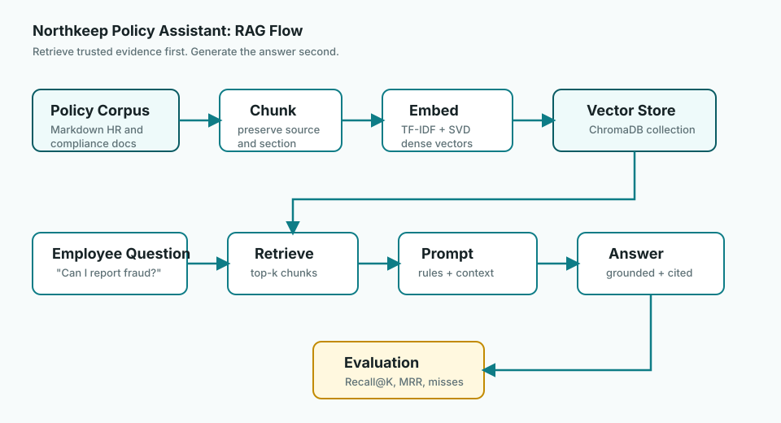

Why RAG Exists
Imagine asking an AI assistant, "Can I report fraud directly to the SEC under our company policy?" A smooth answer is not enough. You need the right answer, from the right document, with a source you can verify.
The Problem RAG Solves
In the early days of using large language models, many people treated them like magical encyclopedias. Ask a question, get a confident answer. That felt amazing until the answer sounded right but was quietly wrong, outdated, or completely unrelated to the private documents the user actually cared about.
That is the doorway into RAG. A language model can write fluently, but fluency is not the same as evidence. If an employee asks, "How many vacation days do I get after five years?", the assistant should not guess from general HR knowledge. It should read the company's policy and cite the source.
Plain-language definition
Retrieval-Augmented Generation means: retrieve trusted information first, then generate an answer using that retrieved context.
A tiny history
First, teams tried prompting models harder. Then they tried pasting longer and longer documents into the chat. Eventually the pattern became clear: serious systems need a retrieval step. Find the right evidence first. Ask the model to answer second.
Model Memory vs. Trusted Context
Model memory is what the model learned during training. Trusted context is what your system provides at answer time. RAG is the discipline of choosing, formatting, and testing that context.
Think of the model as a brilliant colleague who writes well, reasons quickly, and sometimes speaks too confidently. RAG is how we hand that colleague the exact binder, page, and paragraph before asking them to respond.
User question
-> retrieve policy chunks
-> build grounded prompt
-> generate answer with citations
-> evaluate retrieval and answer quality
The Northkeep Policy Assistant
This repository already has a working RAG engine in
01-policy-rag-poc. It uses synthetic banking HR and
compliance policies, local TF-IDF + SVD embeddings, ChromaDB retrieval,
Groq or Ollama generation, and a golden retrieval eval set.
We will use that project like our training ground. Not a toy that only works in a demo, and not a giant enterprise system that hides every moving part. It is small enough to understand and real enough to expose the decisions that matter.
Current eval baseline
Recall@3 is 86.7% and MRR is 0.789. Two training-policy misses are preserved as learning material because real systems improve through failure analysis.
question = "Can I report fraud directly to the SEC?"
retrieved_context = retrieve(question)
answer = generate_answer(question, retrieved_context)
evaluate(question, expected_source="10_whistleblower_policy.md")Text diagram: where the evidence enters
Employee question
-> retrieve top policy chunks
-> build trusted context block
-> prompt model with rules + context
-> answer with citations
-> evaluate retrieval and answer qualityThis text version matters because architecture should be explainable even without a rendered image. If you can draw it in plain text, you probably understand it.
GenAI Builder Thought Process
New-age builders do not just ask AI for an answer. They frame the problem, state assumptions, test outputs against evidence, critique failures, and record engineering decisions.
In this chapter, your thought process is simple: when would model memory be risky, and what evidence should the assistant retrieve before it answers?
This is the new learning style we want to model. We are not just asking GenAI to finish tasks. We are learning how to think with it: frame the question, test the answer, challenge the result, and record the decision so someone else can learn from it later.
- Support assistants need product docs, not guesses.
- Policy assistants need approved internal documents, not generic HR advice.
- Research assistants need citations, not confident summaries with missing sources.
Points To Remember
- RAG is for grounded answers from trusted context.
- Retrieval is the evidence-gathering step.
- Good prompts do not rescue bad retrieval.
- Evaluation turns failures into engineering tasks.
- The builder owns the judgment, even when AI helps.
Ready to check what stuck? Head to the interactive quiz next. The flow after that is exercises, practice bank, interview questions, and then the project.